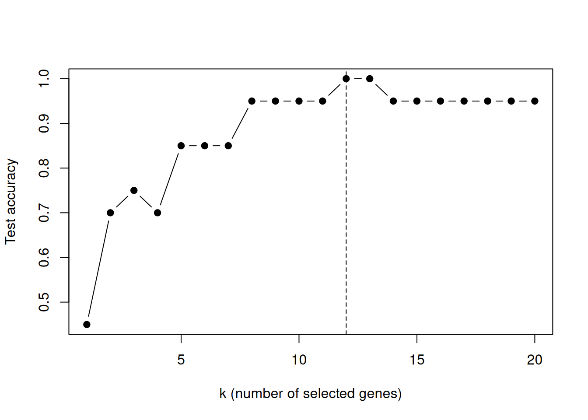

\(p = 2308\) genes, 4 cancer types, \(n = 83\) — and the answer is twelve genes
R code is executed; outputs below are real. Click the Python tab for the equivalent script.
The data
Khan et al. (2001) profiled gene expression for small round blue-cell tumours, a family of four childhood cancers that look nearly identical under a microscope:
BL — Burkitt lymphoma
EWS — Ewing’s sarcoma
NB — neuroblastoma
RMS — rhabdomyosarcoma
Each tumour is described by 2308 cDNA microarray probes. The training set has 63 samples; the test set has 20. The classical version of the question is: can you train a classifier that distinguishes the four tumour types using only a handful of genes?
The CSVs in data/ are formatted with the class label in the first column (y) and the 2308 probes in columns X1–X2308.
plot(seq_along(fit_khan$accuracy_path), fit_khan$accuracy_path, type ="b", pch =19,xlab ="k (number of selected genes)", ylab ="Test accuracy")abline(v = fit_khan$best_k, lty =2)

Accuracy as a function of the number of selected genes.
import numpy as npimport matplotlib.pyplot as pltfrom sklearn.linear_model import LogisticRegressionacc_path = []for s in fit_khan.subset_list: clf = LogisticRegression(max_iter=2000).fit(X_train[:, s], y_train) acc_path.append((clf.predict(X_test[:, s]) == y_test).mean())best_k =int(np.argmax(acc_path) +1)plt.plot(range(1, len(acc_path) +1), acc_path, "o-")plt.axvline(best_k, ls="--")plt.xlabel("k (number of selected genes)")plt.ylabel("Test accuracy")plt.show()
The headline
Twelve genes are enough to separate the four tumour types — perfect classification on the held-out 20 samples, drawn from 2308 candidates. The R and Python implementations agree on the same twelve genes.
A lasso baseline on the same training data selects an order of magnitude more genes for comparable accuracy (see Comparisons).
Reference
Khan, J. et al. (2001). Classification and diagnostic prediction of cancers using gene expression profiling and artificial neural networks. Nature Medicine 7, 673–679.
---title: "Khan SRBCT cancer classification"subtitle: "$p = 2308$ genes, 4 cancer types, $n = 83$ — and the answer is twelve genes"---::: {.callout-note appearance="minimal"}R code is executed; outputs below are real. Click the **Python** tab for the equivalent script.:::## The dataKhan et al. (2001) profiled gene expression for small round blue-cell tumours, a family of four childhood cancers that look nearly identical under a microscope:- **BL** — Burkitt lymphoma- **EWS** — Ewing's sarcoma- **NB** — neuroblastoma- **RMS** — rhabdomyosarcomaEach tumour is described by **2308 cDNA microarray probes**. The training set has 63 samples; the test set has 20. The classical version of the question is: *can you train a classifier that distinguishes the four tumour types using only a handful of genes?*The CSVs in `data/` are formatted with the class label in the first column (`y`) and the 2308 probes in columns `X1`–`X2308`.## Load the data::: {.panel-tabset group="lang"}## R```{r}#| label: khan-load-rtrain <-read.csv("../data/Khan_train.csv")test <-read.csv("../data/Khan_test.csv")x_train <-as.matrix(train[, -1]); y_train <- train$yx_test <-as.matrix(test[, -1]); y_test <- test$ydim(x_train); table(y_train)```## Python```pythonimport pandas as pdtrain = pd.read_csv("../data/Khan_train.csv")test = pd.read_csv("../data/Khan_test.csv")X_train = train.drop(columns="y").to_numpy()y_train = train["y"].to_numpy()X_test = test.drop(columns="y").to_numpy()y_test = test["y"].to_numpy()print(X_train.shape)print(pd.Series(y_train).value_counts())```:::## Fit COMBSSRun COMBSS for $k = 1, \ldots, 20$ with multinomial logistic loss and the test set as validation:::: {.panel-tabset group="lang"}## R```{r}#| label: khan-fit-rlibrary(combss)fit_khan <-combss(x_train, y_train,x_val = x_test, y_val = y_test,family ="multinomial", q =20)fit_khan```## Python```pythonfrom combss import multinomialfit_khan = multinomial.model()fit_khan.fit(X_train, y_train, X_val=X_test, y_val=y_test, q=20, verbose=False)print(fit_khan.subset)```:::## How many genes does COMBSS pick?::: {.panel-tabset group="lang"}## R```{r}#| label: khan-best-rfit_khan$best_kfit_khan$subset_list[[ fit_khan$best_k ]]```## Python```pythonprint(len(fit_khan.subset), "genes selected at the best k")print(fit_khan.subset)```:::## Test-set accuracy at each $k$::: {.panel-tabset group="lang"}## R```{r}#| label: khan-acc-r#| fig-cap: "Accuracy as a function of the number of selected genes."plot(seq_along(fit_khan$accuracy_path), fit_khan$accuracy_path, type ="b", pch =19,xlab ="k (number of selected genes)", ylab ="Test accuracy")abline(v = fit_khan$best_k, lty =2)```## Python```pythonimport numpy as npimport matplotlib.pyplot as pltfrom sklearn.linear_model import LogisticRegressionacc_path = []for s in fit_khan.subset_list: clf = LogisticRegression(max_iter=2000).fit(X_train[:, s], y_train) acc_path.append((clf.predict(X_test[:, s]) == y_test).mean())best_k =int(np.argmax(acc_path) +1)plt.plot(range(1, len(acc_path) +1), acc_path, "o-")plt.axvline(best_k, ls="--")plt.xlabel("k (number of selected genes)")plt.ylabel("Test accuracy")plt.show()```:::## The headlineTwelve genes are enough to separate the four tumour types — perfect classification on the held-out 20 samples, drawn from 2308 candidates. The R and Python implementations agree on the same twelve genes.A lasso baseline on the same training data selects an order of magnitude more genes for comparable accuracy (see [Comparisons](05-comparisons.qmd)).## ReferenceKhan, J. et al. (2001). *Classification and diagnostic prediction of cancers using gene expression profiling and artificial neural networks*. **Nature Medicine** 7, 673–679.::: {.page-nav}[← Previous: HD logistic simulation](02-simulation-hd.qmd)[Next: Rice GWAS →](04-rice.qmd):::